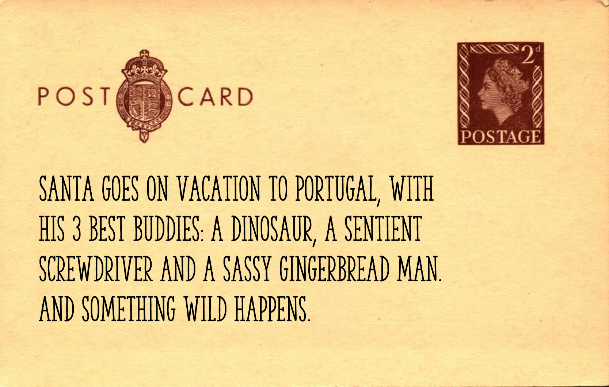

Don't Screw With Christmas was made in Unity for the GameDev Técnico's Christams Jam. The way this jam works is that each team writes a letter to santa, which is then devlivered to a different team, who has to make a game based on it. Both recipient and sender are kept secret from each other.
The letter we got was the following:
In response, we made a 3D platformer in which you had to explore a room to find all of Santa's gifts, as a sentient screwdriver. There are some things you can interact with, to rotate plaforms or unscrew screws. I was the sole programmer, so I made everything from the characters controller to the toon shader that lights te screwdriver.